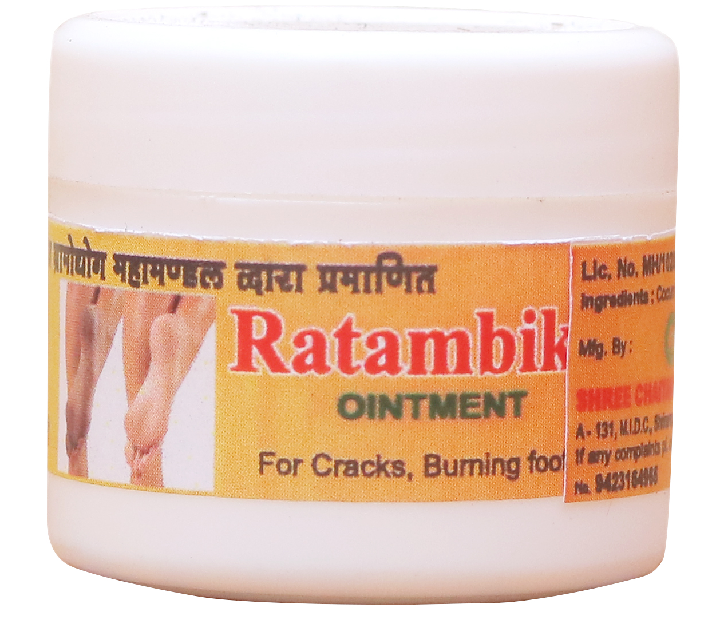

रातांबिका

मौसम के बदलते इन्सान के शरीर में भी बदलाव होते है। बहुत ठंडीया बहत गर्मी
से बदनमें रुखापन बढ़ता है। कभी कभी इसके कारण त्वचा पर असर होता है। रुखेपन
के कारण तथा हवा, जमीन इसके कारण पाँव की एडियाँ हमेशा फटती है । इससे दर्द
भी होता है और रुक्षता से सौंदर्य में भी बाधा आती है । इस परेशानी में कभी
कभी पाँवो सेखुन भी बहता है। इसपर इलाज के लिए हम रातांबिका मलमलाए है। इससे
जल्द आराम मिलकर पाँव की फटी एडियाँ भरकर पाँव मुलायम और सुंदर दिखते है।
पाँव की उंगलियों में हो छाले भर आते है। पाँव की जलन कम होती है।
घटक : कोकम तेल, पुन्नाग।
प्रयोग : प्रतिदिन एक या दो बार पाँव धोकर, सुखाकर १-२ ग्रॅम मलम
अच्छी तरहसे रगडकर इस्तेमाल करें। लगाने के बाद कमसे कम २ घंटा मिट्टी या
पानी में न जायें।
Call Now for order 9423164965